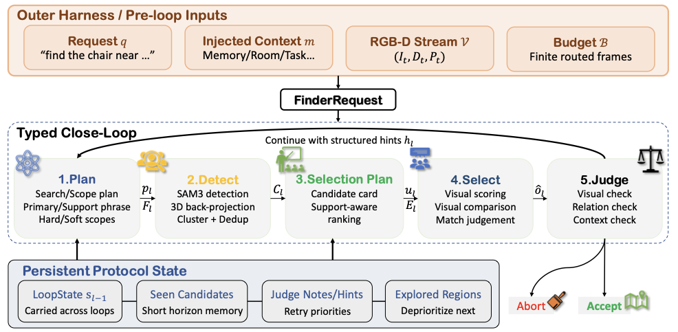
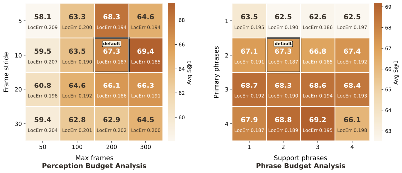
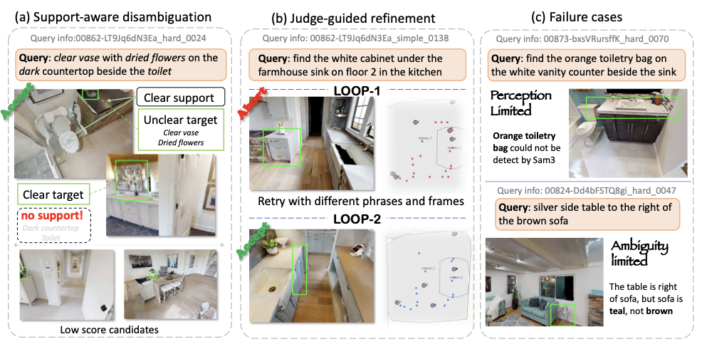
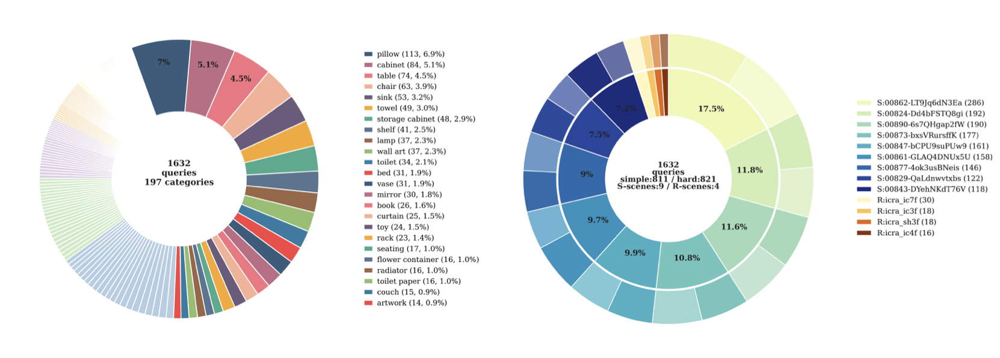

A reusable closed-loop primitive that turns language-based object grounding into query-conditioned evidence gathering, candidate verification, and explicit accept/continue/abort control.
Anonymous Institution
Finding the object referred to by language in a partially observed 3D scene is a core capability for embodied agents. Existing approaches either couple object search with online exploration, which can be costly when relevant observations have already been captured, or query pre-built open-vocabulary maps and scene graphs in a largely one-shot manner.
We present Finder, an agentic closed-loop object-finding primitive for embodied grounding. Instead of treating grounding as passive retrieval from a fixed scene representation, Finder maintains a typed loop state that links query-conditioned planning, scoped evidence gathering, candidate verification, and accept/continue/abort control. When evidence is incomplete or ambiguous, the loop can redirect subsequent perception and comparison rather than simply returning the top retrieved object.
On open-vocabulary embodied Object Retrieval in Habitat/HM3D and real-world RGB-D scenes, Finder improves the averaged 1m success rate by 15.75 points over strong baselines. The same primitive also transfers to sequential object grounding and embodied object-centric question answering, improving spatial and temporal localization without changing the inner grounding protocol.
Finder organizes one grounding episode as a typed loop: plan what to search for, route perception to scoped evidence, detect candidates, verify candidate-centric context, and judge whether to accept, continue, or abort.

Finder allocates perception budget to explicit room or scene scopes and expands compact phrase sets for open-vocabulary detection.
Candidate shortlist construction keeps local visual context and support-object relations available for verification.
A structured judge decides whether current evidence is sufficient or whether the next loop should redirect search.
These full-loop replays show Finder using SAM3 only as the mask proposal backend, while planning, evidence construction, candidate comparison, and final judgment follow the Finder protocol.
Finder is evaluated on open-vocabulary Object Retrieval, sequential object grounding, and embodied object-centric question answering. The same inner grounding primitive is reused across tasks.
| Method | Sim S@1 | Real S@1 | Avg S@0.5 | Avg S@1 | Avg Err |
|---|---|---|---|---|---|
| HOV-SG | 50.90 | 42.68 | 32.96 | 50.49 | 0.408 |
| DualMap | 51.94 | 19.51 | 36.83 | 50.31 | 0.348 |
| FSR-VLN | 48.90 | 24.39 | 31.62 | 47.67 | 0.422 |
| Finder | 67.29 | 46.34 | 59.93 | 66.24 | 0.193 |
| Method | s-acc | t-acc |
|---|---|---|
| DAAAM+GPT | 22.16 | 11.22 |
| Finder | 25.91 | 12.20 |
| Method | QA Acc. | PosErr | TempErr |
|---|---|---|---|
| DAAAM | 0.711 | 41.75 | 1.792 |
| Finder | 0.540 | 39.04 | 1.433 |
Ablations show that blind repetition is not enough: later loops need carried feedback and targeted follow-up. Design-space studies further show that Finder benefits from balanced perception and phrase budgets rather than simply maximizing either axis.


The Object Retrieval benchmark contains 1,632 queries over 197 categories across 9 simulated scenes and 4 real-world scenes.

BibTeX will be updated after de-anonymization.
@inproceedings{anonymous2026finder,
title = {Finder: Agentic Closed-Loop Object Finding for Embodied Grounding},
author = {Anonymous Author(s)},
booktitle = {Conference on Robot Learning (CoRL)},
year = {2026}
}